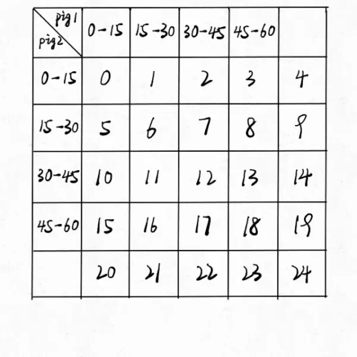

20. 喝水试毒
20.1. 老鼠喝水
问题 ：有 \(n\) 瓶水，有且仅有 1 瓶水有毒，老鼠喝到有毒的水之后会立即死亡。每只老鼠只能喝一次水（可以是多瓶水的混合）， 请问找出有毒的水瓶至少要用多少只老鼠？
答案 ： \(m = \lceil \log_2 n \rceil\) 。
策略 ：将水瓶进行二进制编号，第 \(k\ (1 \leqslant k \leqslant m)\) 只老鼠喝编号第 \(k\) 位为 1 的所有水瓶的混合水，如果该老鼠死亡，说明有毒的水瓶编号第 \(k\) 位为 1 ， 否则为 0。例如， \(n=8,\ m=3\) ，第 1 只老鼠喝 \(001, 011, 101, 111\) ，第 2 只老鼠喝 \(010, 011, 110, 111\) ，第 3 只老鼠喝 \(100, 101, 110, 111\) ； 如果第 1 只老鼠和第 3 只老鼠死亡，第 2 只老鼠没死，则有毒水瓶的编号为 \(101\) 。
20.2. 可怜的小猪
问题 ：[LeetCode] Poor Pigs。假设有 \(n\) 只水桶，有且仅有一只水桶有毒。猪喝水中毒后会在 \(t\) 分钟内死亡，请问至少需要多少只猪能在 \(T\ (T \geqslant t)\) 分钟内找出有毒水桶？
小猪可以同时饮用任意数量的桶中的水，并且该过程不需要时间。
小猪喝完水后，必须有 \(t\) 分钟的冷却时间。在这段时间里，只允许观察，不允许继续喝水。
任何给定的桶都可以无限次采样。
答案 ： \(m = \lceil \frac{\log n}{\log (T / t + 1)} \rceil\) 。Hint：如果只用 1 只猪，在 \(T\) 分钟内，可以喝 \(T/t\) 桶水，因此可以找出 \(T/t + 1\) 只水桶中的有毒水桶。
策略 ：将水桶按 \(T/t + 1\) 进制进行编号，第 \(k\ (1 \leqslant k \leqslant m)\) 只猪在 \(0\) 时刻喝编号第 \(k\) 位为 0 的所有水桶的混合水， 在 \(t\) 时刻喝编号第 \(k\) 位为 1 的所有水桶的混合水，在 \(2t\) 时刻喝编号第 \(k\) 位为 2 的所有水桶的混合水 ……。以 \(n=25,\ t=15,\ T=60,\ m=2\) 为例：
{kind=link}
20.3. 参考资料
LeetCode 题解 | 458.可怜的小猪